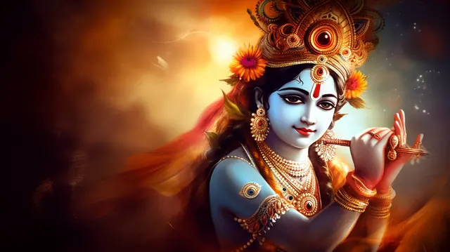

Vasudeva Krishna
"Hare Krishna, Hare Krishna,
Krishna Krishna, Hare
Hare
Hare Rama, Hare Rama,
Rama Rama, Hare Hare"

-- ॐ श्री कृष्णः शरणं ममः
Introduction
Sri Krishna is the central figure of the Bhagavad Gita. Sri Krishna is widely considered by Hindus to be an Avatar – a direct descent of God. During the Battle of Kurukshetra, Krishna gave Arjuna the immortal spiritual discourse of the Bhagavad Gita – Krishna taught a spiritual path of wisdom, devotion and discrimination. Sri Krishna also popularised devotional bhakti yoga through his time with Radha and the Gopis in Vrindavan
Sri Krishna said in the opening section of the Bhagavad Gita:
“Whenever, O descendant of Bharata, righteousness declines and unrighteousness prevails, I manifest Myself. For the protection of the righteous and the destruction of the wicked, and for the establishment of religion, I come into being from age to age.”
Lord Krishna, a revered figure in Hinduism, is considered one of the most influential and beloved deities in Indian mythology and religious history. He is often depicted as the eighth avatar (incarnation) of Lord Vishnu, one of the principal gods of the Hindu trinity. Lord Krishna's life and teachings are chronicled in various ancient texts, most notably in the Hindu epic, the Mahabharata, and the Bhagavad Gita.
Krishna was born in Mathura, a city in present-day Uttar Pradesh, India, over 5,000 years ago. His birth is celebrated as Krishna Janmashtami, a significant festival observed by millions of Hindus worldwide. According to legend, he was the son of Devaki and Vasudeva, but was raised by his foster parents, Yashoda and Nanda in Vrindavan. As a child, Krishna was known for his mischievous and playful nature. He was also famous for his enchanting flute playing, which mesmerized both humans and animals alike.
As Krishna grew older, he became a wise and charismatic leader. In his youth, he was instrumental in various heroic exploits, including defeating demons like Putana, Kaliya, and Trinavarta, earning the adoration and respect of the people of Vrindavan. However, his most significant contribution came during the great Kurukshetra War, a pivotal event in the Mahabharata.
During the Kurukshetra War, Krishna served as the charioteer and advisor to the Pandava prince, Arjuna. Before the battle commenced, Arjuna was stricken with doubt and moral confusion about fighting his own relatives, teachers, and friends. At this critical moment, Krishna delivered the Bhagavad Gita, a profound spiritual discourse that addressed Arjuna's doubts and provided him with insights into duty, righteousness, and the nature of reality.
In the Bhagavad Gita, Krishna emphasized the concept of dharma (righteous duty) and advocated performing one's responsibilities without attachment to the results. He stressed the importance of selfless action and devotion to God as a path to spiritual liberation.
Krishna's divine teachings and guidance in the Bhagavad Gita have made it a revered scripture, inspiring millions of people to lead virtuous lives and attain self-realization.
Krishna's interactions with various individuals and his divine love for Radha, a cowherd girl, have become a symbol of the divine-human relationship and the essence of spiritual devotion. These stories are beautifully depicted in various works of art, literature, and dance across India and the world.
Lord Krishna's life, teachings, and philosophies have profoundly impacted Hindu culture, spirituality, and art for millennia. He is celebrated and worshipped in various forms across the Indian subcontinent and by Hindu communities worldwide. Temples dedicated to Krishna, such as the world-famous ISKCON temples, attract devotees from all walks of life.
In conclusion, Lord Krishna's life story is a testament to his divine nature, wisdom, and compassion. His teachings, particularly in the Bhagavad Gita, continue to serve as a source of inspiration and guidance for seekers of truth and spiritual seekers. The legacy of Lord Krishna remains an integral part of Hinduism's rich tapestry, leaving an enduring impact on countless devotees and influencing the spiritual and cultural landscape of India and beyond.